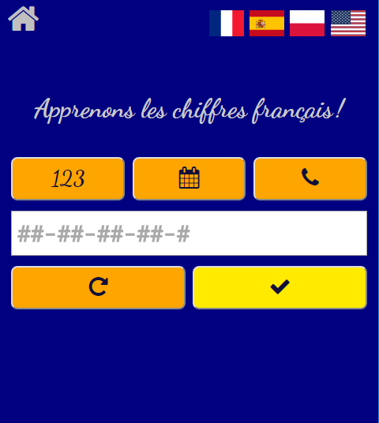
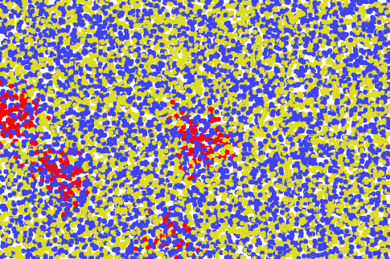
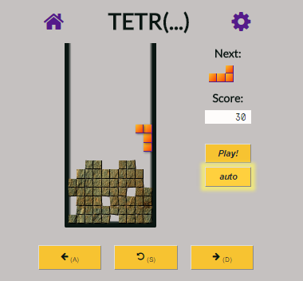
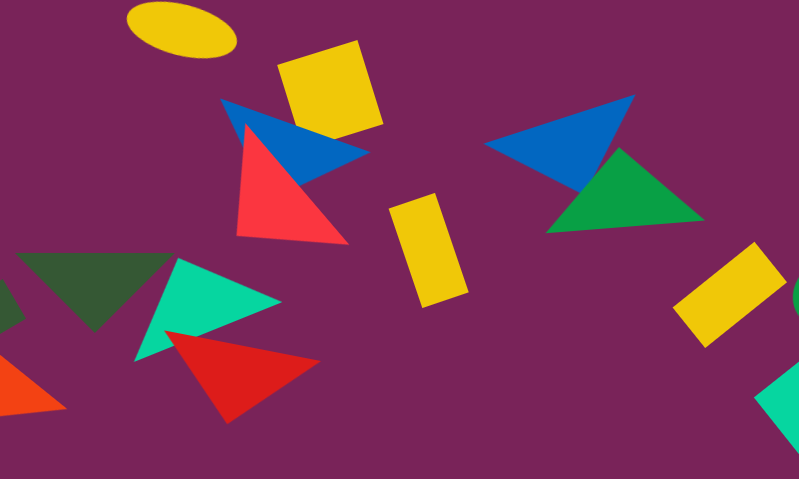

About me
First, take your time with a well-known game, or a small, yet genuinely useful app for language learning.
Links above.
Now about me. Maciej Bójko is my name. For over a decade I'd been a journalist. My field of expertise
has been twofold: tech and science. I've written for Gazeta Wyborcza
, Dziennik
(before
it merged and became Dziennik Gazeta Prawna
), Focus
, Do Rzeczy
, Polska - the Times
,
Polska Agencja Prasowa, and others. As staff writer or freelancer. If you happen to recognize my name
- very cool. If not, ah well. Not surprising. I'm not exactly a celebrity.
And I've decided that enough is enough. Time to reinvent myself, to decidedly change the career path. Let's
be honest: do you recollect reading any press articles about dramatic shortages of journalists?
About the huge market demand? About new newspapers and magazines launched, and thriving? About the business
booming? Yeah. Me neither.
Therefore: programming (beside being a journalist, I'm also a mathematician, or at least that's what's written
on my bachelor's diploma). And, more specifically, front end development. I like the quirky JavaScript,
with its informal approach. I like the logic of HTML and CSS. I truly enjoy problem solving. All said,
the front end seems like a perfectly reasonable future career. And so I sat down, cracked a book open,
and started learning.
Right now ("right now" equals January 2018) I've four months of commercial experience (at
Orba) under my belt. There, I've experienced all the usual frontend developer
stuff, with grunt and gulp and yarn and webpack and bower, Bootstrap, SCSS and LESS, vanilla JS plus jQuery
plus Underscore, Angular, AngularJS, Knockout.js.
Besides Polish, English, some French, Russian and Spanish (for varying values of some
), I
speak HTML, CSS, JavaScript, some PHP and some SQL, I'm familiar with Git, Bootstrap, SASS, AngularJS, Angular,
TypeScript, React, Redux, Gulp, Webpack and I'm adding new stuff to that list every week.
So, now came the time to put some out my stuff out there. The site is intended to be permanently in progress.
I'll be putting more things here as soon as I can show them in public without feeling terribly ashamed.
But, what is here now, is this.
The most recent things here would be: Angulartris
and Reactris, two ripoffs of Tetris written using Angular and React,
respectively.
About the apps.

This project of mine was born out of a very specific need. See, as a part of that "reinvent myself" project,
I decided to learn some new foreign languages. First and foremost, French (and also Spanish). It's
hard! And one of numerous challenges is, understand spoken language.
With a sentence, with a piece of dialogue, a description, a story, if you missed something, if you didn't
hear right, if you don't know the word - you can still try infer the meaning from context. You might
even succeed, or be "close enough". With numbers, however, it isn't so. If you got it wrong, you're
doomed. With a phone number, there's no "close enough", there's no "I get the general meaning". And
the apps I found in the Google Play store were sadly limited. So I wrote one for myself.
Now, it isn't exactly cross-browser. The Web Speech API's support from platform to platform
is haphazard. Chrome's, for example, is uniformly excellent. Natural sounding voices, several supported
languages. No matter, Windows, Linux or mobile. With other browsers, however - hit and miss. What
languages will be supported, I can't know. The application must find out for itself, and handle it.
It does. I wrote three other language versions - the French is the basic - to increase the chance
that your browser will be able to say something at all. Writing an additional language controller
amounts to adding a dozen very straightforward lines. And that includes handling the fact that in
French, the telephone number is recited in groups of two digits (or so I've been led to believe),
and in English they say the date in the month-day-year order. I hope you appreciate the app's construction.
Now, it has also an AngularJS version. Same functionality, one–third less code.

This project of mine was inspired by an animated GIF, visualizing the herd immunity: basically, even if you yourself can't be vaccinated, everyone else (or close enough) being vaccinated will still protect you. You can see the original GIF here. I ran with the idea. I kept the original colors: blue for the vaccinated,
yellow for the unvaccinated, and red for the infected, dropped the who was infected by whom
part of the graph — as it would only complicate the model with no real payoff — and wrote
the thing.
Generally, I prefer writing stuff that is genuinely useful, even if its scope of usefulness be very narrow.
Like learn to recognize numbers spoken in French
, or visualize how an infectious disease spreads
(I've heard of at least one teacher using my humble little app in class). I made some effort in order
to make the code reusable.
About the games

That I decided to write as an exercise for myself. The clone of
arguably one of the best, most influential games ever. Of course you know it, and you know its
name, although I'm not sure if I'm allowed to use it, it is, after all, someone's trade mark. So
let's stay with "the falling bricks game".
To make it more "frontendy" (if I may be forgiven the Buffy speak), I decided against using the canvas. Instead, it's all HTML
elements. Every basic square is a div. Not only it forced me to learn quite a lot about
positioning, it also had some unforeseen benefit. Calculating elements' sizes, positioning them,
even resizing the game itself (it goes up to 18 squares wide - purely an arbitrary choice) takes
very few lines of code! I make CSS, and the browser's engine, work for me. You can resize the browser,
with a game still in progress, and everything, the well, the bricks, the panels, etc. will be redrawn
to best fit the window. Come on, try it. And that required exactly zero lines of JavaScript.
Right now, it has three incarnations. The
first one, from early 2017, is written without any framework (jQuery doesn't count). No
immutable objects, programming mostly imperative. Verbose, with lots of lines of code to do simple stuff,
like handling the main game loop (where the brick falls down), which might get paused, or interrupted, or end.
It's simply not very good. (It isn't completely bad, either. It's just than I can do better now.)
The second and
third ones I wrote in React and Angular, respectively.
Learned and re-learned a thing or two about functional programming, state management (including Redux),
TypeScript, manipulating RxJS observables. I believe that comparing the old stuff with the newer
shows some progress.

Not much of a game, that. It was just me learning CSS animations. It's minimalist on purpose. One button,
which serves to start the game and then to pause it, no game over
ever, no protection from
the player cheating and shooting when the game's paused.
Notice that the JavaScript is relatively short. The whole script takes some 70-odd lines. I tried to
make the CSS do for me as much work as possible.
I was also a little informal with the whole thing, UI and code both, although the latter is limited to
silly sounding names of functions and variables. I hope I'll be forgiven.